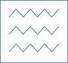
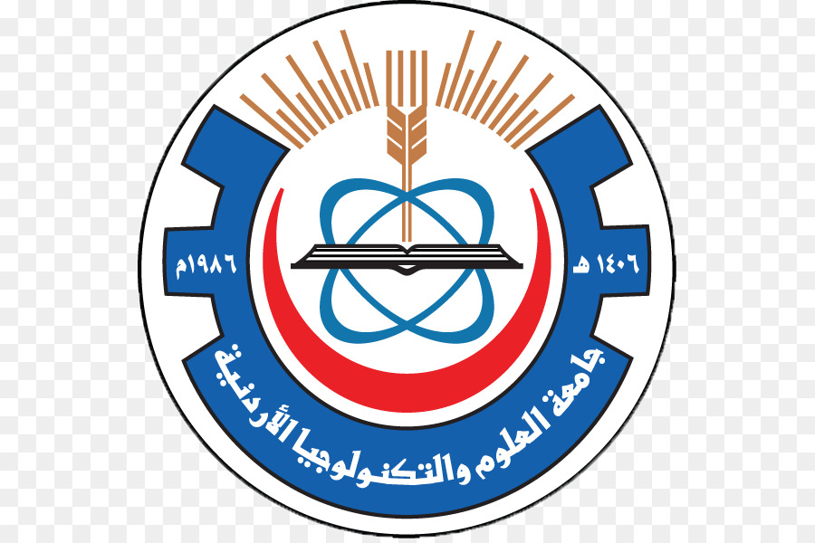
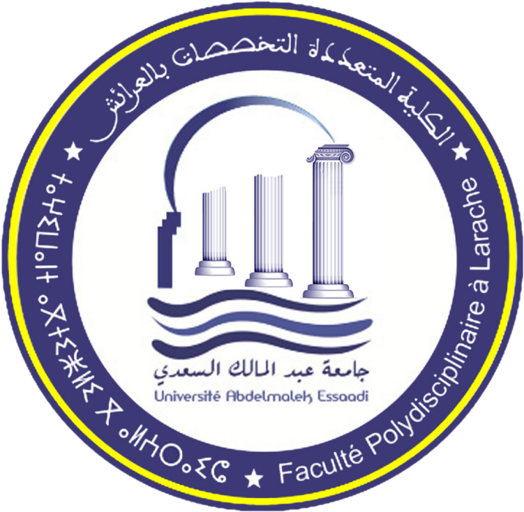

Hello, I am Youness EL Brag
A Single and a Musician enthusiast. I am a Machine Learning Engineer And Researcher at Jordan University of Science and Technology A Part Time Job working in the Medical Image Engineering and Processing A proud Department of Allied Medical Sciences-Radiologic (Technology) with a Master degree (Embedded system) but all interesting field of study is ML , who likes to write about machine learning @Medium. If I were not an Engineer, I would have been an psychologist. I am fascinated by Human behaviors and socialism and like to read and discover more about Huamn interactions and Neuronscience. I love to Listen to Jazz/Blues music .
Current/Past Affiliations

the national university of water and environmental engineering

jordan university of science and technology

Multi-disciplinary faculty Larache